마블 시네마틱 유니버스
페이즈 3
-
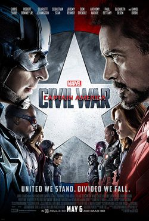
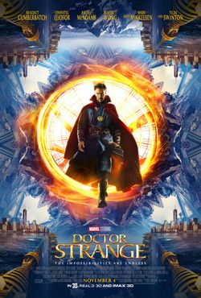
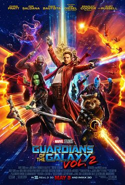
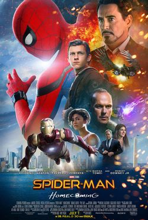
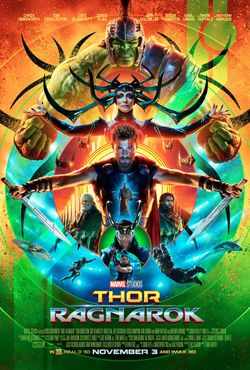
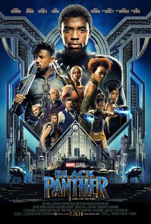
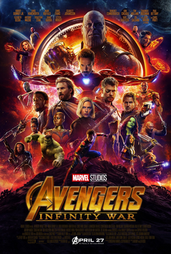
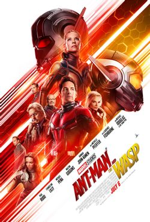
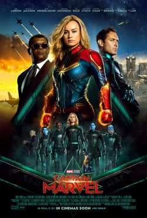
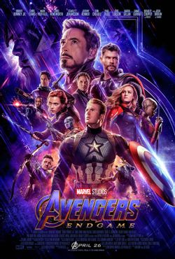
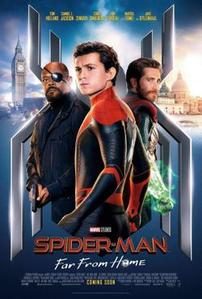
마블 시네마틱 유니버스의 페이즈 3 (Marvel Cinematic Universe: Phase Three)은 미국의 마블 스튜디오에서 마블 코믹스 작품들을 원작으로 삼아 제작한 슈퍼히어로 영화 시리즈이다. 2016년 영화 《캡틴 아메리카: 시빌 워》로 시작해서 2019년 영화 《스파이더맨: 파 프롬 홈》까지 총 열한 편의 작품으로 구성되어 있다. 여기에는 크로스오버 작품인 《어벤져스: 인피니티 워》 (2018)과 그 후속작인 《어벤져스: 엔드게임》 (2019)가 들어가 있다. 이들 영화의 프로듀서는 전부 케빈 파이기가 맡았으나, 《스파이더맨: 홈커밍》과 《스파이더맨: 파 프롬 홈》에서는 에이미 파스칼이, 《앤트맨과 와스프》에서는 스티븐 브루사드가 공동으로 맡았다. 열한 편의 전세계 박스오피스 흥행기록을 모두 합치면 135억 달러를 넘으며, 평론계와 일반 관객으로부터 긍정적인 반응을 얻었다. 특히 《어벤져스: 엔드게임》의 경우 역사상 가장 높은 흥행을 거둔 작품에 등극하기도 했다.
페이즈 3에서는 크리스 에번스와 톰 홀랜드가 총 다섯 편에 걸쳐 주·조연 및 카메오로 등장하면서 최다 출연 횟수를 기록하였다. 영화 외에도 마블 스튜디오는 토르에 초점을 맞춘 모큐멘터리 단편영화 세 편을 제작하였으며, 본 영화와 스토리가 연계되는 코믹북도 출판하였다. 페이즈 3은 페이즈 1, 페이즈 2와 함께 '인피니티 사가'를 이루며, 인피니티 사가 이후의 이야기를 다룬 페이즈 4로 이어질 예정이다.
영화 관람 순서 & 간략 스토리
캡틴 아메리카: 시빌 워(2016)
-
평점 :
3.9
어벤져스와 관련된 사고로 부수적인 피해가 일어나자 정부는 어벤져스를 관리하고 감독하는 시스템인 일명 ‘슈퍼히어로 등록제’를 내놓는다. 어벤져스 내부는 정부의 입장을 지지하는 찬성파(팀 아이언맨)와 이전처럼 정부의 개입 없이 자유롭게 인류를 보호해야 한다는 반대파(팀 캡틴)로 나뉘어 대립한다.
닥터 스트레인지 (2016)
-
평점 :
3.9
불의의 사고로 절망에 빠진 천재 외과의사 닥터 스트레인지. 마지막 희망을 걸고 찾아 간 곳에서 에인션트 원을 만나 세상을 구원할 강력한 능력을 얻게 되면서, 모든 것을 초월한 최강의 히어로로 거듭난다.
가디언즈 오브 갤럭시 VOL.2 (2017)
-
평점 :
3.8
사상 최악의 빌런 ‘타노스’에 맞서 은하계를 구하고 최고의 해결사로 등극한 ‘가.오.갤’ 멤버들. 하지만 외계의 여사제 ‘아이샤’(엘리자베스 데비키)가 맡긴 임무를 수행하던 중 실수로 또 다시 쫓기는 신세로 전락한다. 한편 자신에게 숨겨진 힘의 원천에 대해 고민하던 리더 ‘스타로드’(크리스 프랫)는 갑작스레 자신 앞에 나타난 아버지로 인해 또 다른 위기에 빠지게 된다.
스파이더맨: 홈커밍
-
평점 :
4.1
‘시빌 워’ 당시 ‘토니 스타크’(로버트 다우니 주니어)에게 발탁되어 대단한 활약을 펼쳤던 스파이더맨 ‘피터 파커’(톰 홀랜드). 그에게 새로운 수트를 선물한 토니 스타크는 위험한 일은 하지 말라며 조언한다. 하지만 허세와 정의감으로 똘똘 뭉친 피터 파커는 세상을 위협하는 강력한 적 ‘벌처’(마이클 키튼)에 맞서려 하는데... 아직은 어벤져스가 될 수 없는 스파이더맨 숙제보다 세상을 구하고 싶은 스파이더맨 그는 과연 진정한 히어로로 거듭날 수 있을 것인가.
토르: 라그나로크 (2017)
-
평점 :
3.8
죽음의 여신 헬라가 아스가르드를 침략하고, 세상은 모든 것의 종말 ‘라그나로크’의 위기에 처한다. 헬라에게 자신의 망치마저 파괴당한 토르는 어벤져스 동료인 헐크와도 피할 수 없는 대결을벌이면서 절체절명의 위기에 빠지게 된다.
블랙 팬서 (2018)
-
평점 :
3.5
‘시빌 워’ 이후 와칸다의 왕위를 계승한 티찰라(채드윅 보스만)는 와칸다에만 존재하는 최강 희귀 금속 ‘비브라늄’과 왕좌를 노리는 숙적들의 음모가 전세계적인 위협으로 번지자 세상을 구할 히어로 ‘블랙 팬서’로서 피할 수 없는 전쟁에 나선다.
어벤져스: 인피니티 워 (2018)
-
평점 :
4.0
새로운 조합을 이룬 어벤져스, 역대 최강 빌런 타노스에 맞서 세계의 운명이 걸린 인피니티 스톤을 향한 무한 대결이 펼쳐진다.
앤트맨과 와스프 (2018)
-
평점 :
3.6
‘시빌 워’ 사건 이후 은둔하며 히어로와 가장의 역할 사이에서 고민 중이던 ‘앤트맨’과 새로운 파트너 ‘와스프’ 앞에 정체불명의 빌런 ‘고스트’가 등장한다. 시공간의 개념이 사라진 양자 영역으로 들어갈 수 있는 기술을 훔쳐 달아난 고스트를 쫓던 앤트맨과 와스프는 상상도 못했던 상황에 직면한다.
캡틴 마블 (2019)
-
평점 :
3.5
1995년, 공군 파일럿 시절의 기억을 잃고 크리족 전사로 살아가던 캐럴 댄버스(브리 라슨)가 지구에 불시착한다. 쉴드 요원 닉 퓨리(사무엘 L. 잭슨)에게 발견되어 팀을 이룬 그들은 지구로 향하는 더 큰 위협을 감지하고 힘을 합쳐 전쟁을 끝내야 한다.
어벤져스: 엔드게임 (2019)
-
평점 :
4.1
인피니티 워 이후 절반만 살아남은 지구, 마지막 희망이 된 어벤져스, 먼저 떠난 그들을 위해 모든 것을 걸었다. 위대한 어벤져스, 운명을 바꿀 최후의 전쟁이 펼쳐진다.
스파이더맨: 파 프롬 홈 (2019)
-
평점 :
3.9
‘엔드게임’ 이후 변화된 세상, 스파이더맨 ‘피터 파커’는 학교 친구들과 유럽 여행을 떠나게 된다. 그런 그의 앞에 ‘닉 퓨리’가 등장해 도움을 요청하고 정체불명의 조력자 ‘미스테리오’까지 합류하게 되면서 전 세계를 위협하는 새로운 빌런 ‘엘리멘탈 크리쳐스’와 맞서야만 하는 상황에 놓이게 된다.